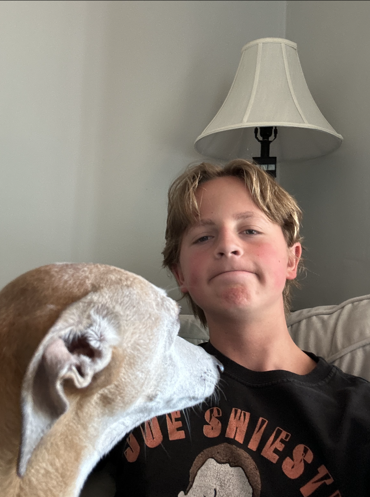

Hey there! I'm Cole Lesseuer, a 14-year-old freshman living in the charming town of Fort Thomas, KY. Currently, I'm navigating the exciting world of high school at Highlands High School. Life here is pretty amazing, and there's so much more to share. Fort Thomas has been my home sweet home for as long as I can remember. The town's rich history and picturesque landscapes make it a unique and welcoming place to grow up. From the iconic architecture to the friendly faces at the local spots, Fort Thomas has played a significant role in shaping my early years. Highlands High School is where the real adventure begins. As a freshman, I'm diving headfirst into a world of new experiences, classes, and friendships. Math, science, literature—you name it, I'm exploring it all to figure out what really lights a spark in me. The hallways are buzzing with energy, and each classroom holds the promise of something new to learn. But it's not all about academics. I've found my groove in various extracurricular activities. Whether it's the adrenaline rush on the soccer field, the camaraderie of a club meeting, or the creative expression in an arts project, I'm soaking it all in. Highlands High is not just a school; it's a hub of opportunities, and I'm making the most of every chance to discover my passions. Beyond the school gates, Fort Thomas offers its own set of adventures. There's this cozy ice cream shop I frequent, and the weekends often find me and my friends hanging out in our favorite spots. The town's blend of history and modernity provides the perfect backdrop for my teenage escapades. As for the future, well, that's a journey I'm just starting to map out. The sciences intrigue me, and I wonder if a career in biology or engineering might be my calling. On the flip side, there's a part of me that's drawn to the arts—maybe literature, film, or something else entirely. High school is all about discovering who you are and what you love, and I'm excited to see where my interests take me. So, there you have it—a glimpse into the life of a 14-year-old freshman named Cole Lesseuer. With each passing day, I'm adding more chapters to my high school story, and I can't wait to see how it all unfolds. Cheers to the adventure!
